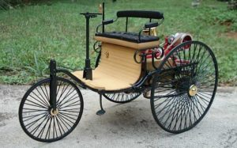
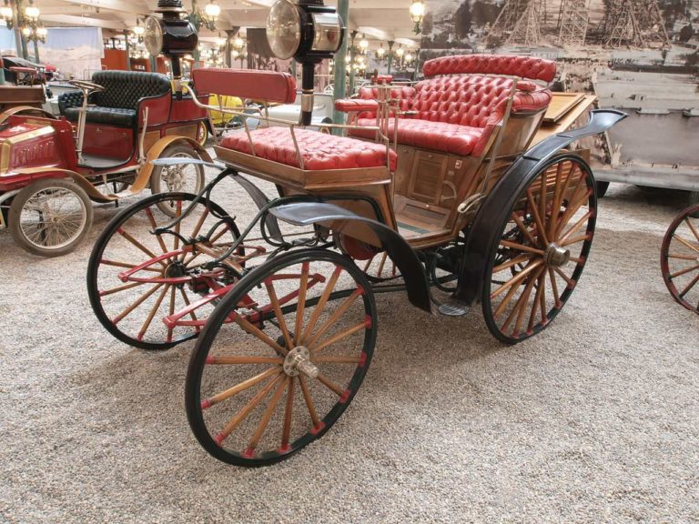
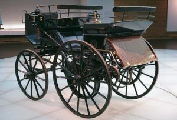
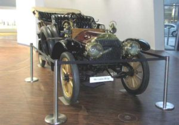

-
«Отцы автомобилестроения» Германии.

Считается, что Родиной автомобилей является Германия. Независимо друг от друга немецкие инженерыАвтомобиль
Даймлера и Бенца Даймлер и Бенц изобрели и запатентовали в 1886 году автомобили с бензиновыми ДВС.
Справедливости ради необходимо отметить, что появление автомобиля было бы невозможным без предыдущих изобретений и
открытий, которые были сделаны великими умами человечества в разное время и в разных частях света. Как бы там ни было,
именно 18 век стал решающим для появления автомобилей.
-
Карл Бенц история создания автомобиля.

Свой первый автомобиль Motorwagen («Моторная тележка») Бенц создал в 1885 году.
Несмотря на внешнюю примитивность, это был первый трехколесный экипаж с бензиновым ДВС и рулевым управлением.
Рабочий объем одноцилиндрового двигателя мощностью 0,9 л.с. составлял 954 куб.см, максимальная скорость экипажа — 16 км/ч.
Если изначально автомобиль не получил признания в Германии, то на выставке в Париже изобретение оценили по достоинству.
Жена Бенца в свою очередь тоже провела своего рода рекламную компанию, преодолев на автомобиле расстояние от Мангейма до
Пфорцгейм и обратно. Автомобиль БенцаБлагодаря незапланированному автопробегу в 106 км Берта Бенц сумела продемонстрировать миру,
что изобретение ее мужа является довольно надежным и быстрым транспортным средством. За период с 1886 по 1893 г.г.
предприятие Бенца продало 25 моделей Motorwagen. Продолжая совершенствовать свои машины, Бенц сконструировал в 1893 году
четырехколесный автомобиль Victoria, мощность двигателя которого уже равнялась 3 л.с., а скорость — до 20 км/ч.
В течение года было реализовано 45 автомобилей. Через год появилась новая модель автомобиля Velo, на котором прошли первые автогонки Париж — Руан.
Этот автомобиль явился предшественником автомобиля Comfortable, получившим позже широкое распространение.
В 1885 году Бенц стал основателем первой автомобильной компании и наладил серийный выпуск автомобилей.
В начале XX века компания Benz I Со оказалась в тяжелом финансовом положении, в результате чего Бенц покинул предприятие (1903).
Лишь в 1905 году уже с новым конструктором Гансом Нибелем фирма вновь добилась успеха.
-
Автомобиль Готлиба Даймлера.

Одновременно с Бенцем свой автомобиль сконструировал другой немецкий инженер Г.Даймлер, известный как изобретатель ДВС.
Четырехколесная карета Даймлера была оснащена бензиновым двигателем, мощность которого составляла 1,5 л.с. и имела ременную передачу.
Карета ДаймлераМаксимальная скорость — 16 км/ч. Это был образец автомобиля, а первый оригинальный автомобиль
Даймлер создал со своим помощником В.Майбахом и продемонстрировал на Парижской выставке. Через год они стали учредителями компании DMG,
которая изначально занималась выпуском бензиновых ДВС, используемых на суше, в воздухе и на воде. Логотипом компании была звезда с тремя лучами.
Спустя 2 года был продан и первый автомобиль. Вскоре Майбах оставил компанию, в 1893 году DMG покинул и Даймлер.
В 1894 году вместе с сыном и Майбахом Даймлер разработал двигатель «Феникс», лицензия на него вместе с брендом Daimler
были проданы англичанину Фредерику Симмсу.
-
Автомобиль Майбаха и Мерседеса.

В 1899 году Майбах сконструировал Рhоеnix-Daimler, но из-за технических проблем работы были приостановлены.
Однако Э.Еллинек сумел переубедить Майбаха и в 1901 году миру был представлен автомобиль Mercedes-35Р5,
ставший основой для выпущенных в дальнейшем самых удачных автомобилей в истории компании DMG.
MercedesИзобретатель назвал свое изобретение в честь дочери Еллинека. Автомобиль имел 4-х-цилиндровый двигатель
(5913 см куб) и задние ведущие колеса. Несмотря на конкуренцию, существовавшую между обоими изобретателями,
финансовый кризис в Германии способствовал тому, что в 1926 году компании DMG и Benz & Cie были вынуждены объединиться.
Изначально концерн был назван Daimler-Benz AG, позже — Mercedes-Benz. Логотипом компании являлась трехконечная звезда Даймлера,
в окружении лавровой ветки, позаимствованной с эмблемы Бенца. Основатель автомобилестроения Карл Бенц скончался в 1929 году.
К этому времени автомобиль Мерседес с двигателем в 35 л.с, радиатором, механическим приводом и кузовом приобретает все большую популярность.